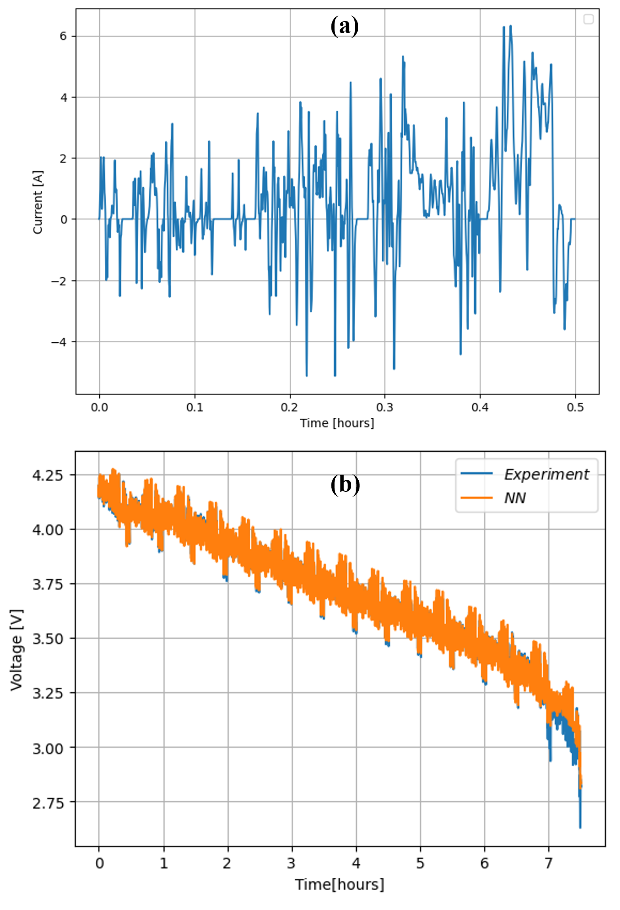
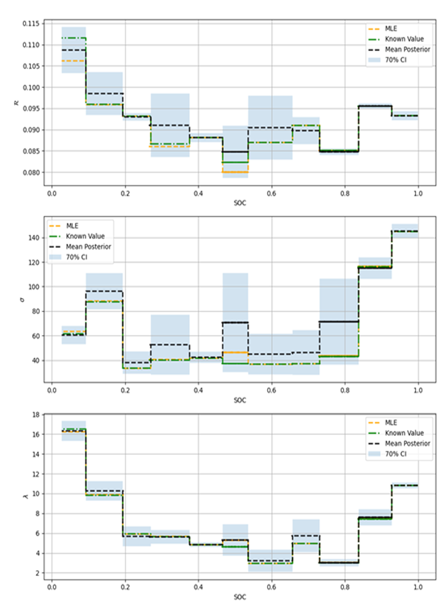
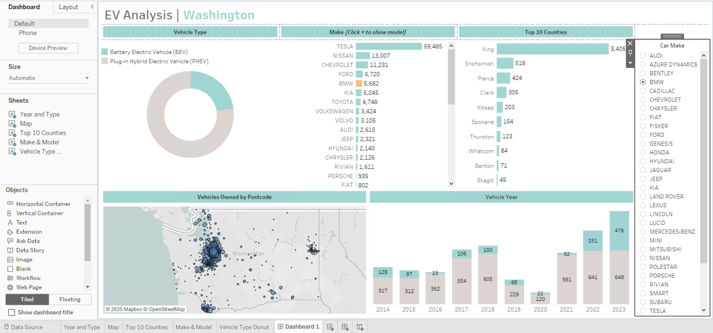

Li-ion Batteries
A lithium-ion or Li-ion battery is a type of rechargeable battery that uses the reversible intercalation of Li⁺ ions into electronically conducting solids to store energy.

Li-ion batteries are widely used due to their high energy density, long cycle life, and lightweight design in comparison to the other types of batteries.
Battery Modelling
Battery modelling uses mathematical models to simulate and analyze battery behavior, predicting performance, lifespan, and safety. These models help optimize battery designs, improve battery management systems, and understand the impact of various factors like temperature and aging.

Battery modelling helps reduce testing costs and time, and allows simulation of battery behaviour under different conditions. For instance, the Thevenin equivalent circuit is a method for simplifying a complex electrical circuit into a single voltage source in series with a single resistance, as seen from the load terminals. This simplification makes circuit analysis easier and provides a useful representation for understanding how a complex circuit behaves from the perspective of its output.
Parameterisation
Parameterizing a battery model involves determining the specific values of its parameters to accurately represent the battery's behavior. This is typically done by fitting the model to experimental data obtained through various testing procedures like GITT or HPPC. The extracted parameters are then used to predict the battery's performance under different conditions.

Battery models require key internal parameters (e.g., resistance, capacitance in Thevenin model) which are difficult to measure directly. So, we are able to use neural networks to infer these from experimental data.
Second-life Batteries
Second-life batteries are used EV batteries repurposed for applications like home energy storage and off-grid power systems. Second life batteries are ones that have reached the end of their "automotive" life but still have a residual capacity of about 70-80%. This means they can be used in stationary systems, in combination with renewable energy generation, such as wind and solar, and/or to supply services to the electricity network.

They provide a sustainable way to reuse valuable resources, reduce waste, and support energy access in underserved regions.
State-of-Health
Battery State of Health (SoH) refers to the remaining capacity and overall condition of a battery compared to its original, new state. It's a percentage indicating how much the battery's performance has degraded over time due to aging and use. A 100% SoH represents a new battery, while a battery at its end-of-life might have an SoH of 70-80% or less.
Measure SoH Using Battery Models
Measuring SoH using battery models involves estimating the remaining capacity of a battery compared to its original capacity. This can be done by various methods, including model-based approaches that utilize physical battery models or data-driven methods like machine learning. Battery models enable non-invasive estimation of battery health and safety, which is crucial for second-life systems operated by non-experts.

Infer Thevenin Model Parameters
Upload your battery dataset below to estimate circuit elements (R0, R1, C1, etc.) using the trained neural network and PSO optimization.
Case study 1: Discharge Drive Cycle Test
In the first case study, we tried to infer Thevenin model's circuit elements (R0, R1, C1) for a real-world experiment. The result is shown in the following picture in comparison to the real data.
 Additionally, the parameter inference results are as follows: Data Visualisation
We use data Visualisation tools to showcase data and analysis. For instance, we use Tableau to provide an interactive Tableau dashboard visualizing the Electric Vehicle (EV) population in Washington State. The dashboard explores trends in vehicle types, brands, geographical distribution, and registration years based on open data.
